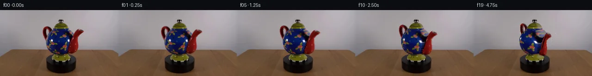

![首帧]()

Round 00
2026-11-05T18:42:28.595824+00:00像素候选变化代码 +343/−0inspection 更新
pixels 364ddfc905d13c55 · code c46b420fbfa0c587
查看本轮 generate.py 真实 diff
--- previous/generate.py
+++ current/generate.py
@@ -0,0 +1,343 @@
+#!/usr/bin/env python3
+"""Photo-derived, layered 2.5-D clockwise rotation. No external assets/models."""
+from pathlib import Path
+import json
+import math
+import numpy as np
+import cv2
+from PIL import Image, ImageDraw
+from scipy.ndimage import distance_transform_edt, gaussian_filter
+from artifact_io import save
+
+ROOT = Path(__file__).resolve().parent
+H, W = 144, 256
+SOURCE = np.asarray(Image.open(ROOT / 'first_frame.png').convert('RGB'), dtype=np.uint8)
+SRC = SOURCE.astype(np.float32)
+YY, XX = np.mgrid[:H, :W].astype(np.float32)
+ELEVATION = math.radians(20)
+SIN_E = math.sin(ELEVATION)
+AXIS_X = 131.0
+
+
+def polygon(points, scale=4):
+ canvas = np.zeros((H * scale, W * scale), np.uint8)
+ coords = np.round(np.asarray(points) * scale).astype(np.int32)
+ cv2.fillPoly(canvas, [coords], 255)
+ return cv2.resize(canvas.astype(np.float32) / 255, (W, H), interpolation=cv2.INTER_AREA)
+
+
+def remap(a, x, y, interpolation=cv2.INTER_LINEAR):
+ return cv2.remap(a, x.astype(np.float32), y.astype(np.float32), interpolation,
+ borderMode=cv2.BORDER_REPLICATE)
+
+
+def intervals(rows):
+ rows = np.asarray(rows, np.float32)
+ left = np.interp(YY, rows[:, 0], rows[:, 1]).astype(np.float32)
+ right = np.interp(YY, rows[:, 0], rows[:, 2]).astype(np.float32)
+ return (left + right) / 2, (right - left) / 2
+
+
+# Every silhouette/control point is measured from the supplied photograph.
+BODY_ROWS = [
+ (39, 120, 145), (41, 114, 149), (44, 111, 153),
+ (48, 107, 157), (52, 104, 159), (56, 102, 156),
+ (60, 100, 154), (64, 99, 153), (68, 99, 151),
+ (72, 99, 150), (76, 100, 149), (80, 102, 148),
+ (84, 104, 147), (88, 106, 146), (92, 110, 145),
+ (95, 115, 142), (97, 122, 138), (99, 126, 135)]
+body_center, body_radius = intervals(BODY_ROWS)
+body_polygon = polygon([(l, y) for y, l, r in BODY_ROWS] +
+ [(r, y) for y, l, r in BODY_ROWS[::-1]])
+
+LID_ROWS = [(27, 128, 136), (29, 125, 139), (31, 121, 143),
+ (33, 119, 145), (36, 117, 147), (38, 116, 149),
+ (40, 115, 149), (42, 118, 146), (43, 125, 141)]
+lid_center, lid_radius = intervals(LID_ROWS)
+lid_polygon = polygon([(l, y) for y, l, r in LID_ROWS] +
+ [(r, y) for y, l, r in LID_ROWS[::-1]])
+foot_rows = [(95, 120, 143), (97, 117, 147), (100, 114, 150),
+ (102, 112, 152), (105, 113, 151), (108, 117, 148),
+ (110, 123, 142), (111, 129, 136)]
+foot_center, foot_radius = intervals(foot_rows)
+foot_polygon = polygon([(l, y) for y, l, r in foot_rows] +
+ [(r, y) for y, l, r in foot_rows[::-1]])
+knob_polygon = polygon([(127, 20), (135, 20), (138, 23), (135, 26),
+ (136, 29), (127, 29), (128, 26), (125, 23)])
+spout_polygon = polygon([(169, 41), (175, 41), (180, 44), (182, 47),
+ (178, 50), (174, 54), (171, 59), (169, 65),
+ (170, 74), (170, 80), (168, 86), (165, 91),
+ (159, 95), (151, 97), (145, 95), (145, 89),
+ (149, 83), (151, 76), (153, 68), (155, 60),
+ (158, 54), (161, 49), (163, 45), (166, 43)])
+handle_polygon = polygon([(101, 35), (106, 36), (110, 39), (113, 44),
+ (113, 49), (110, 55), (108, 63), (111, 72),
+ (115, 80), (116, 86), (111, 87), (106, 83),
+ (102, 77), (99, 71), (97, 66), (95, 60),
+ (93, 54), (92, 48), (92, 42), (94, 38),
+ (97, 36)])
+
+# A wall model is used only behind the moving attachments. Original background
+# pixels elsewhere remain exactly as photographed.
+background = SRC.copy()
+for y in range(19, 100):
+ lx, rx = 85, 190
+ # Using local horizontal neighbors reproduces the wall's exposure gradient.
+ a = SRC[y, lx-3:lx+4].mean(axis=0)
+ b = SRC[y, rx-3:rx+4].mean(axis=0)
… diff truncated; 256 more lines …